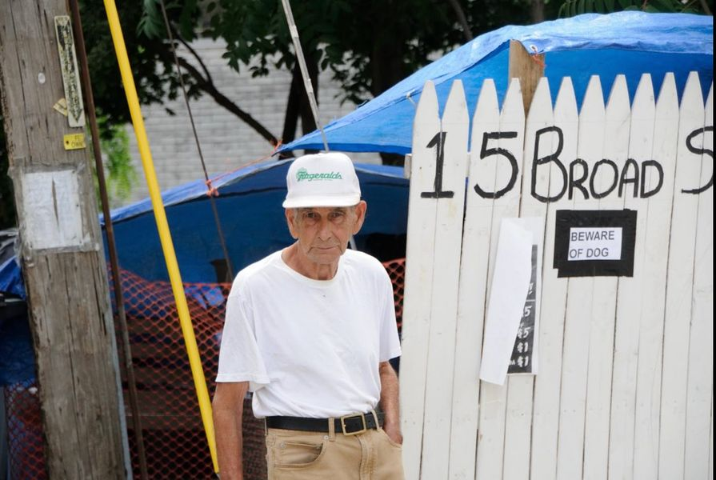

Timeline photos
Do you guys remember John Coffee? This picture was taken Wednesday, July 25 2018. He lived in a tent with us for quite some time.
He just always seemed like a normal old guy to me.
I don’t always understand why some of these people end up in tents. Surely John had social security. And he clearly was physically strong enough to survive all year long in a tent.
People like to say that they “choose” to live in a tent. There is an element of truth to that statement.
People “choose” to go bankrupt.
People “choose” to be obese.
People “choose” to live with an abusive partner.
Those are technically all true statements. But if you have lived that life or know someone who has lived that life, you know it’s a distorted kind of choice.
“Who am I to judge?” That’s a major driving force of motivation for me. I don’t know what you are going through. I don’t know what it is like to live in your mind, your body and your history.
I’m just glad I got to run into you and hang out with you.
John was a cool dude. It was really awesome to have him live at our little community.